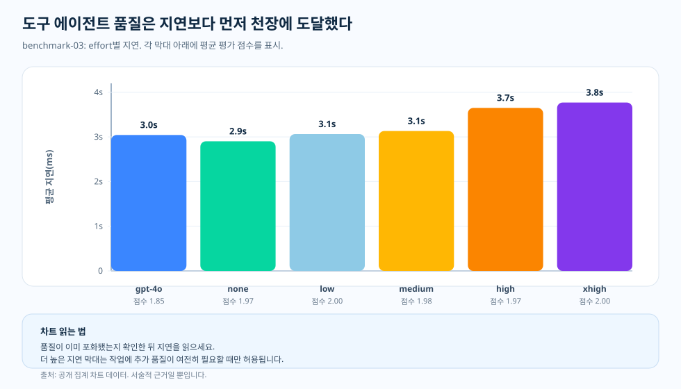

주제 글, benchmark-03 도구 에이전트 작업
도구 에이전트 작업: 품질이 천장에 닿으면, 진짜 변수는 지연 시간
도구를 쓰는 에이전트를 만들었는데 군데군데 틀리기 시작하면, 첫 직관은 대개 같습니다. 더 깊이 생각하게 만들자는 것입니다. 그 직관은 합리적입니다. 도구 작업에는 계획, 도구 선택, 중간 상태, 답변 합성이 얽혀 있어, 추론을 더 하면 도움이 될 것처럼 들립니다. 하지만 다른 가능성도 있습니다. 도구 경로가 충분히 좋고 루브릭이 이미 꼭대기 근처라면, 추가 추론은 품질 점수가 천장에 묶인 채 지연 시간과 비용만 더할 수도 있습니다. benchmark-03은 도구 에이전트 단면에서 둘 중 어느 쪽이 사실인지 시험합니다.
이 직관을 시험한 이유
익숙한 상황입니다. 팀이 도구를 쓰는 에이전트를 내보냈는데 몇몇 경우에서 답이 틀리면, 가장 먼저 추론 강도부터 올려 보려 합니다. 그럴 만한 이유가 있습니다. 에이전트 작업은 단순히 외워서 답하는 게 아니라, 계획을 세우고 알맞은 도구를 고르고 중간 상태를 들고 가다가 마지막에 답을 합성해야 하니까요. 이렇게 손이 많이 가는 작업이라면 "더 깊이 생각하게 하자"가 가장 먼저 떠오르는 카드처럼 보입니다.
하지만 여기서 서로 반대되는 두 가지 해석이 갈리고, 둘 다 확인해 봐야 합니다. 추가 추론이 도구 계획을 실제로 다듬어 답을 끌어올릴 수도 있고, 반대로 도구 경로와 루브릭이 이미 함께 천장을 이루고 있을 수도 있습니다. 뒤쪽이 맞다면, 에이전트가 답에 이르는 괜찮은 경로를 한번 찾고 난 뒤로는 추론을 더 해도 점수는 꼭대기에 묶인 채 지연 시간과 비용만 늘어납니다. benchmark-03은 둘 중 어느 쪽이 머릿속 짐작이 아니라 실제 측정에서 성립하는지 시험합니다.
그래서 직접 측정했습니다. benchmark-03은 도구 에이전트 작업 하나를 고정해 두고, 같은 모델을 강도 단계별로 훑습니다 — GPT-4o 기준선, 그다음 GPT-5.2의 none, low, medium, high, xhigh — 그리고 각 단계에서 평균 평가 점수를 지연 시간·비용·토큰 구성과 나란히 봅니다. 결과는 에둘러 말할 것 없이 분명합니다. GPT-5.2는 GPT-4o 기준선보다 품질이 좋아졌지만, GPT-5.2 안에서는 품질이 천장(약 1.97~2.00)에 몰린 반면 비용과 지연 시간, 추론 토큰은 계속 올라갔습니다. 아래 한 장 요약이 이 결론을 한 화면에 담고, 이어지는 절에서 측정된 세부를 풀어냅니다.

질문
도구 에이전트 품질이 이미 꼭대기에 가까울 때, 추론 강도를 더 올리면 무엇이 더 좋아질까요?
근거
benchmark-03의 품질·비용·지연 시간·토큰 형태 차트.
발견
이 구간에서 GPT-5.2 품질은 모든 강도 단계에서 1.97~2.00 천장 안에 머물렀고, 같은 구간에서 비용은 요청당 $0.002762에서 $0.003499로, 지연 시간은 2.9초에서 3.8초로 올랐습니다.
결정
도구 에이전트 단면은 품질 천장에 닿는 가장 낮은 추론 강도로 보내고, 더 높은 강도는 기본값이 아니라 정당화해야 할 비용과 지연 시간으로 다룹니다.

천장 효과가 바로 핵심
benchmark-03의 결과는 "강도를 올릴수록 점수도 올라간다"는 단순한 이야기가 아니었습니다. GPT-4o는 평균 평가 점수 1.85를 기록했습니다. GPT-5.2는 none에서 1.97, low에서 2.00, medium에서 1.98, high에서 1.97, xhigh에서 2.00이었습니다. 기준선보다는 분명히 좋아졌지만, 동시에 천장이기도 합니다.
이렇게 여러 단계가 꼭대기 근처에 몰리고 나면, 강도를 더 올린다고 점수가 따라 오르지는 않습니다. 그래서 다음 근거는 지연 시간, 토큰 구성, 그리고 집계 점수 뒤에 숨은 실패 양상에서 찾습니다.
차트를 읽는 법
이 차트는 막대 높이에 지연 시간을 담았습니다. 품질은 이미 꼭대기 근처로 몰려 차이가 거의 없기 때문입니다. X축은 모델·강도 조합이고, Y축은 평균 지연 시간(밀리초)입니다. 각 막대 아래 라벨은 짝지은 평균 평가 점수입니다.
이 차트는 일부러 히스토그램으로 그리지 않았습니다. 요약된 값들을 나란히 비교하는 그림입니다. 두 조합의 품질이 비슷하다면, 더 짧은 막대는 "더 오래 기다려서 눈에 띄게 나아지는 게 있느냐"는 질문을 던집니다.
도구가 해석을 바꾸는 이유
도구 에이전트 작업에는 도구 선택, 중간 상태 관리, 답변 합성이 모두 들어갑니다. 그래서 짧은 사실형 작업보다 까다롭고, 집계된 품질 점수 하나가 서로 다른 행동을 가려 버릴 수 있습니다. 같은 통과 점수라도, 도구가 대부분의 일을 대신해 준 경우일 수도 있고, 도구는 제대로 골랐지만 마무리 요약이 엉성했던 경우일 수도 있습니다.
차트가 이런 확인 작업을 대신해 주지는 않습니다. 다만 어디를 들여다봐야 할지는 짚어 줍니다. 이번 실행에서 어느 조합이 가장 매력적인지는 기준을 어디에 두느냐에 달려 있습니다. 엄격하게 2.00을 요구한다면 그 점수에 가장 먼저 닿는 것은 low이고, 천장 근처 점수로도 루브릭을 만족한다고 보면 기준선에 가까운 지연 시간에서 none이 자격을 얻습니다. 어느 쪽이든 방법은 같습니다. 기준을 충족하는 가장 낮은 조합을 고르고, 더 높은 강도로 올리기 전에 비용과 지연 시간을 함께 확인하는 것입니다.
이 결과가 뜻하는 것
도구 에이전트 벤치마크는 두 번 읽어야 합니다. 먼저 추론이 정확성을 끌어올렸는지 묻고, 품질이 이미 꼭대기 근처에 몰려 있다면 다시 어느 조합이 지연 시간과 토큰을 가장 잘 잡아 두는지를 묻습니다. 이 두 번째 질문은 곁다리가 아니라, 측정 결과를 실제 운영에까지 가져다 쓰게 만드는 핵심입니다.
근거 표
docs/blog/data/chart-data/cost-curves-effort/benchmark-03/quality.json에서
나오며, 짝지은 지연 시간·비용 차트와 함께
근거 대시보드에서
읽으세요
(제공되는 차트 데이터).

| 근거 항목 | 측정값 A | 측정값 B | 더해 주는 것 |
|---|---|---|---|
| GPT-4o 기준선 | 평가 점수 1.85 | 평균 지연 시간 3.0초 | 탄탄한 기준선이지만, 천장은 아닙니다. |
| GPT-5.2 none | 평가 점수 1.97 | 평균 지연 시간 2.9초 | 비슷한 지연 시간으로 더 나은 품질입니다. |
| GPT-5.2 low | 평가 점수 2.00 | 평균 지연 시간 3.1초 | 완만한 지연 시간 증가로 천장 점수에 도달합니다. |
| GPT-5.2 xhigh | 평가 점수 2.00 | 평균 지연 시간 3.8초 | 다시 천장 점수이지만, 더 느립니다. |
출처와 근거 경계
위의 모든 수치는 이 저장소의 공개 산출물로 추적되며, 모든 비용 수치는 날짜가 박힌 가격 스냅샷을 기준으로 계산됩니다. 이 글이 권하는 라우팅 습관 — 품질 천장에 닿는 가장 낮은 강도에서 멈추기 — 은 이 글 자체의 운영적 해석입니다. 아래 두 계층은 문서화된 입력이 끝나고 추론이 시작되는 경계를 표시합니다.
- [1] Tier 1 — 방법론 계약: 이 저장소,
docs/05-methodology.md(v1.0). 셀당 N = 20 작성 표본, R = 3 반복, 공개 집계 단면만 해당합니다. 차트 해석 본문은 이 고정된 입장을 전제하며, 오차 막대는 신뢰 구간이 아니라 표준편차이고, N = 20에서 p-값은 주장하지 않습니다. - [2] Tier 1 — PAYG 가격 스냅샷: 요청당 비용 관점은 이 저장소의
pricing/azure-openai-payg-2026-05.yaml를 기준으로 가격을 매깁니다. 출처: Azure OpenAI 가격 페이지 (2026-05-19 접근), 아카이브. 정가가 움직이면 비용 수치도 달라집니다. - [3] Tier 2 — benchmark-03 단면 측정: 이 저장소,
benchmarks/03-tool-using-agent/analysis.json. 천장 효과를 보여 주는 품질 막대의 출처입니다 — GPT-4o 기준선 1.85, 그리고 1.966667(none), 2.0(low), 1.983333(medium), 1.966667(high), 2.0(xhigh) 사이에서 천장 띠 안을 오간 GPT-5.2 강도 단계 — 그리고 지연 시간이 2901.991854 ms(none)에서 3770.198794 ms(xhigh)로 오르는 동안 요청당 $0.002762(none)에서 $0.003499(xhigh)로 단조 증가한 비용 수치입니다. - [4] Tier 2 — 렌더링된 차트 데이터: 이 저장소,
docs/blog/data/chart-data/cost-curves-effort/benchmark-03/cost-per-request.json,quality.json,latency.json을docs/blog/data/chart-data/token-composition/benchmark-03/tokens.json과 함께 읽으면, 추론 토큰이 요청당 0에서 52.15로 올랐는데도 품질 막대가 천장에서 움직이지 않았다는 함께 읽기 근거가 됩니다. - [5] 근거 대시보드: 렌더링된 benchmark-03 품질·비용 짝 차트는 같은 산출물을 감사할 수 있는 형태입니다.
이 구간이 증명하는 것과 증명하지 못하는 것: 이 도구 에이전트 작업에서는 추론 강도를 올려도 품질이 천장에 부딪혀 멈췄습니다 — GPT-5.2 점수는 1.97–2.00 띠를 한 번도 벗어나지 않았습니다 — 반면 비용은 강도 단계를 따라 계속 올랐습니다. 다만 같은 천장이 짧은 사실형 작업이나 다단계 추론, 종합 작업에서도 같은 강도에서 나타난다는 것까지 증명하지는 못합니다. 주제마다 따로 측정해야 합니다.
근거로 말할 수 있는 것
이 구간에서 도구 에이전트 작업의 품질은 1.97–2.00 천장에 눌려 평평했고, 추론 강도를 더 올려도 점수는 그대로인 채 비용과 지연 시간만 늘었습니다. '추론은 답이 실제로 바뀔 때만 값을 한다'는 이 시리즈의 기준점에, 천장에 부딪힌 사례를 하나 더하는 셈입니다.
실무 규칙
- 같은 benchmark-03 셀의 품질 차트를 비용·지연 시간 차트와 함께 읽으세요. 품질 막대만 보지 마세요.
- 품질 기준에 닿는 가장 낮은 강도 셀을 찾으세요 — 그 기준이 엄격한 2.00이든 받아들일 만한 천장 근처 점수든 — 그리고 그 셀을 기본값으로 삼으세요.
- 더 높은 강도는 점수가 눈에 띄게 움직일 때만 정당화되는 비용과 지연 시간으로 다루세요.
- 집계를 믿기 전에 들여다보세요. 통과한 셀이 추론이 아니라 도구에 기댔을 수 있습니다.
- 워크로드 형태가 바뀌면 다시 측정하세요. 이 천장은 도구 에이전트 작업에만 해당합니다.
실무 규칙: 이 도구 에이전트 구간에서는 품질이 천장에 닿으면 추론 강도를 더 올리지 마세요 — 강도를 더 줘도 점수는 그대로였고 비용과 지연 시간만 올라갔습니다.
다음: PTU/PAYG 교차점: 용량 결과가 아니라 계획용 선 — 워크로드 규모를 잡고 나면, 프로비저닝된 처리량은 언제 PAYG를 앞설까요?